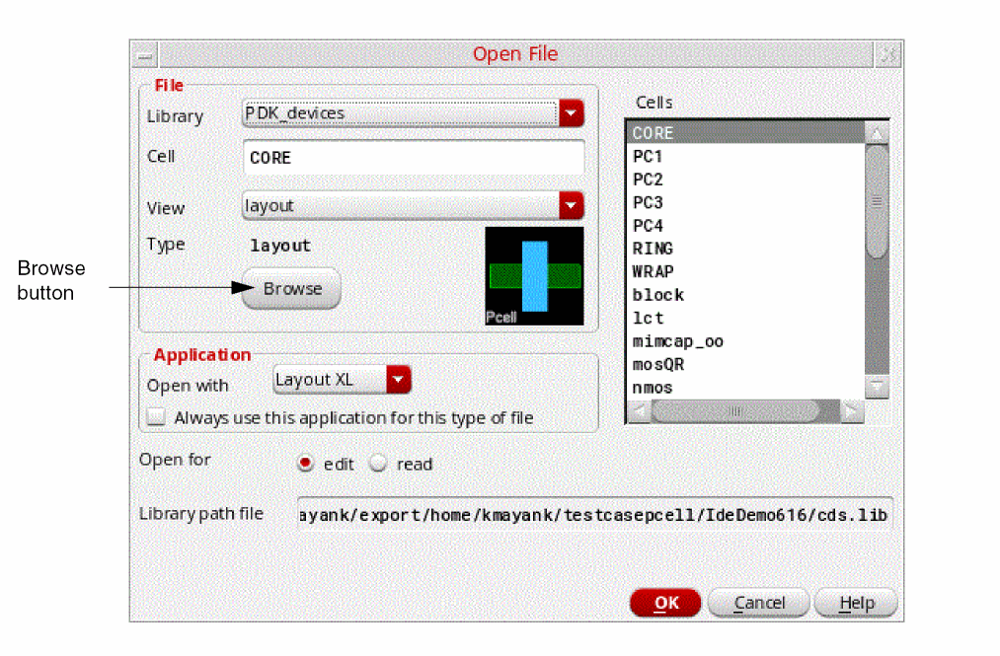
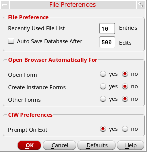

3
Using the Library Browser Form
The Library Browser form is similar to the Library Manager form, but it does not have menus and is used for displaying and selecting cellviews only. Some applications use the Library Browser form; others use the Library Manager. The Library Browser form appears when you click the Browser button in a Virtuoso form.
You can use the Library Browser form to perform the following tasks:
-
Display and select libraries, categories, cells, and views specified in your
cds.libfile. - Filter libraries, categories, cells, and views to narrow your selection
The following topics are discussed:
- Opening the Library Browser Form
- Selecting a View Using the Library Browser
- Setting the Cell Filter Mode
- Setting the Cell Filter Mode
- Opening the Libary Browser Form Automatically
Opening the Library Browser Form
-
To open the Library Browser form, click Browse on any form that has a Browse button. For example, click Browse on the CIW’s Open File form:
The cells in the Cells list box of the Open File form are displayed in the alphanumeric order. To use the same sort order as used in Library Manager, you need set the following environment variable:
(envSetVal "designEditor.fileSpec" "sortCellNameCompareFn" 'string "naturalStrLessp")
The Library Browser form appears (see “Library Browser Form”).
Selecting a View Using the Library Browser
To select a cellview using the Library Browser form, follow these steps:
-
In the Library list box, select a library.
The cells contained in that library appear in the Cell list box. -
To display the views associated with a cell, select the cell name.
The names of the views for that cell appear in the View list box. - In the View list box, double-click a view name.
The Library Browser form closes. The selected library, cell, and view names appear in the appropriate fields on the parent form (from which you opened the Library Browser form).
Setting the Cell Filter Mode
You can control the Library Browser form’s cell filter mode by setting a variable in your .cdsenv file. You can choose to make the cell filtering faster by preventing the view filter from being applied to it or you can choose to make it more accurate but slightly slower by letting the view filter affect the list of cells displayed.
-
In your
.cdsenvfile, set the following variable:cdsLibManager.filter libSelectCellViewCombineMode cyclic "
where value is eithervalue"“never”or“always”.
If you set the variable to“never”, when you click a library in the Library Browser form, only the cell filter is applied before the list of cells is displayed; the view filter is ignored. This means that even cells that do not contain any views matching the view filter are displayed. As a result, the list of cells is displayed much faster.“never”is the default setting.
If you set the variable to“always”, when you click a library in the Library Browser form, both the cell filter and view filter are applied before the list of cells is displayed. Only cells containing views that match the view filter are displayed. With this setting, while the results are more accurate, it takes longer to display the list of cells in the library.
.cdsenv in your $HOME directory; unlike the Library Manager, Virtuoso does not look for the .cdsenv file in your current working directory. Opening the Libary Browser Form Automatically
To set the Library Browser form to open automatically from specific forms, follow these steps:
-
From the CIW, choose Options – File Preferences.
The File Preferences form appears.
 -
In the Open Browser Automatically For group box, select yes for the forms from which you want the Library Browser form to open automatically.
- Click OK.
The next time you open any of the selected types of forms, the Library Browser form appears automatically. You do not have to restart the software for your preferences to take effect.
Return to top